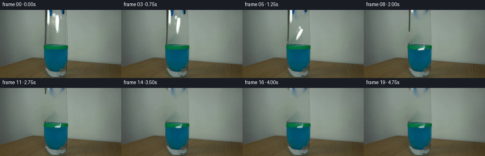
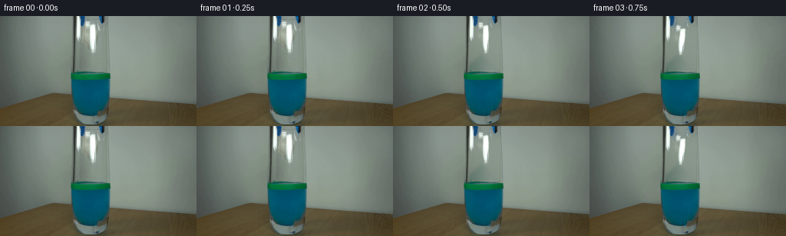
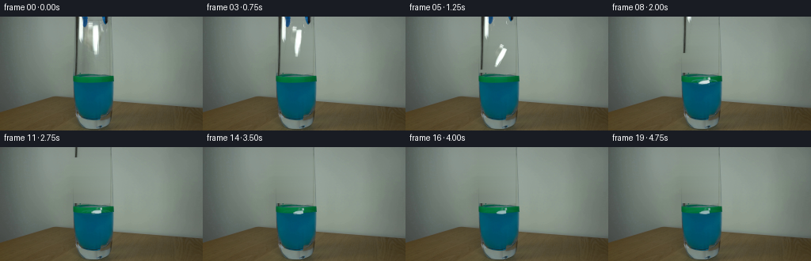
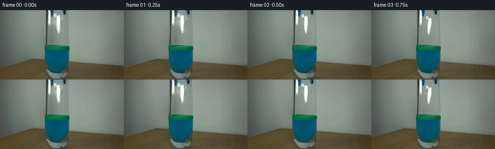

CODING AGENTS AS PIXEL WORLD MODELS
traex/GPT-5.6-Sol · 0138
点击播放 · 原生 RGB 像素
逐轮保存的候选
回放视频、检查图与代码变化。
每份候选均可单独播放。实际图片检查记录在下方工具轨迹中。
候选 01播放与检查图
点击播放 · 原生 RGB 像素


展开代码变化
--- 上一保存版本
+++ 本次保存版本
@@ -0,0 +1,194 @@
+from pathlib import Path
+import math
+import cv2
+import numpy as np
+from PIL import Image
+import artifact_io
+
+ROOT = Path(__file__).resolve().parent
+FIRST = np.asarray(Image.open(ROOT / "first_frame.png").convert("RGB"), dtype=np.uint8)
+H, W = FIRST.shape[:2]
+
+
+def soft_mask(mask, sigma=0.65):
+ m = mask.astype(np.float32)
+ if sigma:
+ m = cv2.GaussianBlur(m, (0, 0), sigma)
+ return np.clip(m, 0, 1)
+
+
+def composite(dst, src, alpha):
+ a = np.clip(alpha[..., None], 0.0, 1.0)
+ return np.clip(dst.astype(np.float32) * (1-a) + src.astype(np.float32) * a, 0, 255).astype(np.uint8)
+
+
+def make_clean_plate(im):
+ """Remove the suspended apparatus from the otherwise locked background."""
+ # The setup occupies this mask only. The lower edge stops above the glass rim.
+ mask = np.zeros((H, W), np.uint8)
+ cv2.rectangle(mask, (93, 0), (138, 70), 255, -1)
+ # Inpaint in a working image with extra reflected rows above the top boundary.
+ pad = 38
+ ext = cv2.copyMakeBorder(im, pad, 0, 0, 0, cv2.BORDER_REFLECT_101)
+ em = np.zeros(ext.shape[:2], np.uint8)
+ em[pad:, :] = mask
+ clean_ext = cv2.inpaint(ext, em, 5, cv2.INPAINT_TELEA)
+ clean = clean_ext[pad:]
+ # A restrained horizontal interpolation suppresses inpaint swirls in the broad
+ # featureless wall, while retaining its real row-by-row color and texture.
+ for y in range(0, 71):
+ left = im[y, 86:93].astype(np.float32).mean(0)
+ right = im[y, 139:147].astype(np.float32).mean(0)
+ for x in range(93, 139):
+ t = (x - 92) / 47.0
+ target = left * (1-t) + right * t
+ clean[y, x] = np.clip(.60 * clean[y, x] + .40 * target, 0, 255)
+ return clean.astype(np.uint8), mask
+
+
+CLEAN, REMOVAL = make_clean_plate(FIRST)
+
+# Difference mattes recover the actual photographed texture, highlights and dark
+# contours of the tool and paper instead of replacing them with flat drawings.
+delta = np.max(np.abs(FIRST.astype(np.int16) - CLEAN.astype(np.int16)), axis=2).astype(np.float32)
+gray = cv2.cvtColor(FIRST, cv2.COLOR_RGB2GRAY).astype(np.float32)
+cgray = cv2.cvtColor(CLEAN, cv2.COLOR_RGB2GRAY).astype(np.float32)
+
+# Paper matte: the irregular bright folded object between the jaws.
+paper_region = np.zeros((H, W), np.uint8)
+poly = np.array([(108,5),(119,5),(126,10),(128,21),(126,38),(124,48),
+ (117,50),(111,44),(108,35),(108,20)], np.int32)
+cv2.fillPoly(paper_region, [poly], 1)
+paper_a = np.clip((gray-cgray-3.0)/60.0, 0, 1) * paper_region
+paper_a *= np.clip((delta-4)/22, 0, 1)
+paper_a = soft_mask(paper_a, .55)
+
+# Tool matte. The left shaft and two blue-black jaws are retained; the paper
+# matte is cut away so that it can move independently after release.
+tool_region = np.zeros((H, W), np.uint8)
+cv2.polygon = None if False else getattr(cv2, 'fillPoly')
+cv2.fillPoly(tool_region, [np.array([(93,0),(112,0),(112,14),(108,19),(105,33),
+ (101,55),(100,70),(94,70)], np.int32)], 1)
+cv2.fillPoly(tool_region, [np.array([(124,0),(138,0),(138,13),(132,16),(126,11)], np.int32)], 1)
+tool_a = np.clip((delta-5)/30.0, 0, 1) * tool_region
+tool_a *= (1 - np.clip(paper_a*1.2, 0, 1))
+tool_a = soft_mask(tool_a, .45)
+
+
+def translated_layer(src, alpha, dx, dy):
+ M = np.float32([[1,0,dx],[0,1,dy]])
+ s = cv2.warpAffine(src, M, (W,H), flags=cv2.INTER_LINEAR,
+ borderMode=cv2.BORDER_CONSTANT, borderValue=(0,0,0))
+ a = cv2.warpAffine(alpha, M, (W,H), flags=cv2.INTER_LINEAR,
+ borderMode=cv2.BORDER_CONSTANT, borderValue=0)
+ return s, a
+
+
+def warped_paper(center, angle, sx, sy, wet=0.0):
+ """Affine projection of the photographed paper around its original center."""
+ cx0, cy0 = 118.0, 27.5
+ th = math.radians(angle)
+ # cv2 destination matrix, allowing unequal scales to suggest tumbling depth.
+ ca, sa = math.cos(th), math.sin(th)
+ A = np.array([[sx*ca, -sy*sa], [sx*sa, sy*ca]], np.float32)
+ c = np.array(center, np.float32)
+ c0 = np.array([cx0, cy0], np.float32)
+ trans = c - A @ c0
+ M = np.concatenate([A, trans[:,None]], axis=1)
+ s = cv2.warpAffine(FIRST, M, (W,H), flags=cv2.INTER_CUBIC,
+ borderMode=cv2.BORDER_CONSTANT, borderValue=(0,0,0))
+ a = cv2.warpAffine(paper_a, M, (W,H), flags=cv2.INTER_CUBIC,
+ borderMode=cv2.BORDER_CONSTANT, borderValue=0)
+ if wet > 0:
+ # Water-darkened cellulose keeps pale ridges but takes on the blue liquid.
+ tint = np.empty_like(s, dtype=np.float32)
+ tint[:] = (45, 105, 117)
+ s = np.clip(s.astype(np.float32)*(1-.48*wet) + tint*(.48*wet), 0,255).astype(np.uint8)
+ a *= (1-.12*wet)
+ return s, np.clip(a, 0, 1)
+
+
+def liquid_effects(frame, index):
+ """Small, clipped surface response: splash, concentric ripples, then damping."""
+ if index < 7:
+ return frame
+ overlay = frame.copy()
+ # Restrict all lines to the inside of the glass.
+ clip = np.zeros((H,W), np.uint8)
+ cv2.ellipse(clip, (118,82), (25,5), 0, 0, 360, 255, -1)
+ if index == 7:
+ # Contact crown and two tiny droplets.
+ cv2.ellipse(overlay, (120,82), (12,3), 0, 185, 355, (99,169,170), 1, cv2.LINE_AA)
+ cv2.line(overlay, (115,81), (113,75), (65,146,153), 1, cv2.LINE_AA)
+ cv2.line(overlay, (127,81), (130,77), (75,151,155), 1, cv2.LINE_AA)
+ cv2.circle(overlay, (112,74), 1, (88,158,160), -1, cv2.LINE_AA)
+ strength = .72
+ else:
+ age = index - 8
+ strength = max(0.10, .58 * math.exp(-age/4.2))
+ radii = [(9+age*1.0,2.0),(16+age*.75,3.0)]
+ for k,(rx,ry) in enumerate(radii):
+ col = (62+9*k, 137+8*k, 145+7*k)
+ cv2.ellipse(overlay, (121,82), (int(rx),int(ry)), 0, 190, 350,
+ col, 1, cv2.LINE_AA)
+ changed = cv2.absdiff(overlay, frame).max(2)
+ a = (changed > 0).astype(np.float32) * (clip/255.0) * strength
+ return composite(frame, overlay, a)
+
+
+def render_frame(i):
+ if i == 0:
+ return FIRST.copy()
+ if i == 1:
+ # A brief real-time hold makes the release legible and keeps continuity.
+ return FIRST.copy()
+
+ frame = CLEAN.copy()
+ # Retract vertically only after the jaws have let go.
+ rises = {2:0,3:0,4:-1,5:-4,6:-9,7:-16,8:-25,9:-35,
+ 10:-46,11:-58,12:-70}
+ dy = rises.get(i, -76)
+ ts, ta = translated_layer(FIRST, tool_a, 0, dy)
+ frame = composite(frame, ts, ta)
+
+ # Ballistic fall, tumbling into a nearly horizontal attitude at impact.
+ trajectory = {
+ 2: ((118.0,28.5), 1, 1.00,1.00,0.00),
+ 3: ((117.5,31.5), 7, 0.97,0.94,0.00),
+ 4: ((117.3,38.5), 16, 0.91,0.84,0.00),
+ 5: ((118.0,49.5), 29, 0.84,0.72,0.00),
+ 6: ((118.8,64.0), 48, 0.74,0.58,0.00),
+ 7: ((120.0,76.5), 69, 0.65,0.48,0.12),
+ 8: ((120.7,81.2), 82, 0.59,0.39,0.35),
+ }
+ if i in trajectory:
+ center,ang,sx,sy,wet = trajectory[i]
+ else:
+ # Buoyant paper rests at the interface and damps through subtle bobs.
+ t = i-9
+ center = (121.0 + .55*math.sin(t*.85), 80.8 + 1.05*math.exp(-t/3.7)*math.cos(t*1.45))
+ ang = 86 + 2.5*math.exp(-t/4.0)*math.sin(t*1.15)
+ sx, sy = .56, .34
+ wet = min(.90, .48 + .055*t)
+ ps, pa = warped_paper(center, ang, sx, sy, wet)
+
+ # At and after impact, ripples lie partly behind the floating paper.
+ if i >= 7:
+ frame = liquid_effects(frame, i)
+ frame = composite(frame, ps, pa)
+
+ # A faint near-side wave crosses in front after submersion/contact.
+ if i >= 8:
+ ov = frame.copy()
+ amp = max(.08, .34*math.exp(-(i-8)/4.5))
+ cv2.ellipse(ov, (121,83), (14+min(i-8,5), 2), 0, 8, 172,
+ (31,111,129), 1, cv2.LINE_AA)
+ diff = cv2.absdiff(ov,frame).max(2)
+ frame = composite(frame, ov, (diff>0).astype(np.float32)*amp)
+ return frame
+
+
+frames = np.stack([render_frame(i) for i in range(20)]).astype(np.uint8)
+# Contract-critical exactness.
+frames[0] = FIRST
+artifact_io.save(frames, ROOT)
候选 02播放与检查图
点击播放 · 原生 RGB 像素


展开代码变化
--- 上一保存版本
+++ 本次保存版本
@@ -27,22 +27,21 @@
# The setup occupies this mask only. The lower edge stops above the glass rim.
mask = np.zeros((H, W), np.uint8)
cv2.rectangle(mask, (93, 0), (138, 70), 255, -1)
- # Inpaint in a working image with extra reflected rows above the top boundary.
- pad = 38
- ext = cv2.copyMakeBorder(im, pad, 0, 0, 0, cv2.BORDER_REFLECT_101)
- em = np.zeros(ext.shape[:2], np.uint8)
- em[pad:, :] = mask
- clean_ext = cv2.inpaint(ext, em, 5, cv2.INPAINT_TELEA)
- clean = clean_ext[pad:]
- # A restrained horizontal interpolation suppresses inpaint swirls in the broad
- # featureless wall, while retaining its real row-by-row color and texture.
+ clean = im.copy().astype(np.float32)
+ # Synthesize the exposed strip from its actual left/right wall colors and a
+ # high-frequency wall texture borrowed from an adjacent, empty strip. This
+ # avoids both a flat-looking fill and top-border inpainting artefacts.
+ donor = im[:71, 148:194].astype(np.float32)
+ donor_low = cv2.GaussianBlur(donor, (9, 9), 0)
+ residual = donor - donor_low
for y in range(0, 71):
left = im[y, 86:93].astype(np.float32).mean(0)
right = im[y, 139:147].astype(np.float32).mean(0)
for x in range(93, 139):
t = (x - 92) / 47.0
target = left * (1-t) + right * t
- clean[y, x] = np.clip(.60 * clean[y, x] + .40 * target, 0, 255)
+ texture = residual[y, x-93] * (math.sin(math.pi*t) ** .6) * .72
+ clean[y, x] = np.clip(target + texture, 0, 255)
return clean.astype(np.uint8), mask
@@ -66,7 +65,6 @@
# Tool matte. The left shaft and two blue-black jaws are retained; the paper
# matte is cut away so that it can move independently after release.
tool_region = np.zeros((H, W), np.uint8)
-cv2.polygon = None if False else getattr(cv2, 'fillPoly')
cv2.fillPoly(tool_region, [np.array([(93,0),(112,0),(112,14),(108,19),(105,33),
(101,55),(100,70),(94,70)], np.int32)], 1)
cv2.fillPoly(tool_region, [np.array([(124,0),(138,0),(138,13),(132,16),(126,11)], np.int32)], 1)
可观测工具轨迹
实际执行的命令与返回图片。
命令 1exit 0
/bin/bash -lc "cat prompt.txt && printf '\\n--- GENERATION_RULES ---\\n' && cat GENERATION_RULES.md"
命令 2exit 0
/bin/bash -lc "find . -maxdepth 2 -type f -printf '%p\\n' | sort && printf '\\n--- tools ---\\n' && command -v ffmpeg || true && command -v python3 || true"
命令 3exit 0
/bin/bash -lc "python3 - <<'PY'
from PIL import Image
im=Image.open('first_frame.png')
print(im.mode, im.size)
print('extrema', im.getextrema())
PY"命令 4exit 0
/bin/bash -lc "python3 - <<'PY'
from PIL import Image
import numpy as np
from collections import Counter
im=np.array(Image.open('first_frame.png'))
# quantized palette
q=(im//16)*16
for rgb,n in Counter(map(tuple,q.reshape(-1,3))).most_common(35):
ys,xs=np.where(np.all(q==rgb,axis=2)); print(rgb,n,'bbox',xs.min(),ys.min(),xs.max(),ys.max(),'meanxy',round(xs.mean(),1),round(ys.mean(),1))
PY"命令 5exit 0
/bin/bash -lc "python3 - <<'PY'
from PIL import Image
import numpy as np
A=np.array(Image.open('first_frame.png'))
# map x=70..165 by2 y=0..140 by2
for y in range(0,140,2):
s=''
for x in range(70,166,2):
r,g,b=map(int,A[y:y+2,x:x+2].mean((0,1)))
if min(r,g,b)>205: c='W'
elif max(r,g,b)<55:c='#'
elif b>r+35 and b>g+12:c='B'
elif b>r+25:c='b'
elif g>r+30 and g>b+5:c='G'
elif g>r+18:c='g'
elif r>b+30:c='o'
elif max(r,g,b)-min(r,g,b)<14 and max(r,g,b)<95:c='d'
elif max(r,g,b)-min(r,g,b)<16:c='.'
else:c=' '
s+=c
print(f'{y:03d} {s}')
PY"命令 6exit 0
/bin/bash -lc "python3 - <<'PY'
from PIL import Image
import numpy as np
from scipy.ndimage import label
A=np.array(Image.open('first_frame.png'))
for name,M in [
('bright',(A.min(2)>175)),
('verybright',(A.min(2)>220)),
('blue',(A[:,:,2]>A[:,:,0]+25)&(A[:,:,2]>A[:,:,1]+8)),
('dark',(A.max(2)<75)),
('green',(A[:,:,1]>A[:,:,0]+25)&(A[:,:,1]>A[:,:,2]+10)),
]:
L,n=label(M)
print('\\n',name,n)
out=[]
for i in range(1,n+1):
ys,xs=np.where(L==i); z=len(xs)
if z>=5: out.append((z,(xs.min(),ys.min(),xs.max(),ys.max()),tuple(np.round(A[L==i].mean(0),1))))
for q in sorted(out,reverse=True)[:25]: print(q)
# row segment report center region class exact avg runs threshold
for y in [0,2,5,8,10,15,20,25,30,35,40,45,50,55,60,65,68,70,72,74,76,78,80,82,84]:
print('\\ny',y)
# sequences according rough meaningful foreground deviations against bg local? Print each x mean rgb 90:145 aggregate 3px
for x in range(88,148,4):
print('%3d:%s'%(x,','.join('%02x'%int(v) for v in A[y:y+2,x:x+4].mean((0,1)))),end=' ')
print()
PY"命令 7exit 0
/bin/bash -lc "python3 - <<'PY'
from PIL import Image
import numpy as np
A=np.array(Image.open('first_frame.png'))
# each pixel classify based relative color/lightness for crop 90:150,0:90
for y in range(0,90):
s=''
for x in range(90,151):
r,g,b=map(int,A[y,x]); mx=max(r,g,b); mn=min(r,g,b)
# detailed
if mx<55:c='@'
elif mx<80:c='#'
elif mx<100:c='D'
elif mx<120:c='d'
elif mx<140:c=':'
elif mx<160:c='.'
elif mx<180:c=','
elif mx<205:c='l'
elif mx<225:c='L'
else:c='W'
if b-r>28 and b-g>8: c='B' if mx>100 else 'b'
if g-r>28 and g-b>8: c='G' if mx>100 else 'g'
s+=c
print(f'{y:02d} {s}')
PY"命令 8exit 0
/bin/bash -lc 'cat artifact_io.py'
命令 9exit 0
/bin/bash -lc "python3 - <<'PY'
from PIL import Image
import numpy as np
from scipy.ndimage import label
A=np.array(Image.open('first_frame.png')).astype(int); r,g,b=A.transpose(2,0,1)
for name,M in [('blue',(b-r>25)&(b-g>8)),('green',(g-r>25)&(g-b>8)),('white',(np.min(A,2)>180)),('dark',(np.max(A,2)<75))]:
L,n=label(M)
print('\\n',name)
out=[]
for i in range(1,n+1):
yy,xx=np.where(L==i); z=len(xx)
if z>=4:out.append((z,(xx.min(),yy.min(),xx.max(),yy.max()),tuple(np.round(A[L==i].mean(0),1))))
for v in sorted(out,reverse=True)[:30]: print(v)
PY"命令 10exit 0
/bin/bash -lc "python3 - <<'PY'
try:
import cv2; print('cv2',cv2.__version__)
except Exception as e: print(e)
PY"命令 11exit 0
/bin/bash -lc "python3 - <<'PY'
from PIL import Image
import numpy as np
A=np.array(Image.open('first_frame.png')).astype(int)
for y in range(0,55):
vals=[]
for th,name in [(170,'+')]:
xs=np.where((A[y,:,].min(1)>th)&(np.arange(256)>=90)&(np.arange(256)<140))[0]
# runs
if len(xs):
cuts=np.r_[0,np.where(np.diff(xs)>1)[0]+1,len(xs)]
vals=['%d-%d'%(xs[a],xs[b-1]) for a,b in zip(cuts[:-1],cuts[1:])]
print(y, ','.join(vals))
PY"命令 12exit 0
/bin/bash -lc "cat > generate.py <<'PY'
from pathlib import Path
import math
import cv2
import numpy as np
from PIL import Image
import artifact_io
ROOT = Path(__file__).resolve().parent
FIRST = np.asarray(Image.open(ROOT / \"first_frame.png\").convert(\"RGB\"), dtype=np.uint8)
H, W = FIRST.shape[:2]
def soft_mask(mask, sigma=0.65):
m = mask.astype(np.float32)
if sigma:
m = cv2.GaussianBlur(m, (0, 0), sigma)
return np.clip(m, 0, 1)
def composite(dst, src, alpha):
a = np.clip(alpha[..., None], 0.0, 1.0)
return np.clip(dst.astype(np.float32) * (1-a) + src.astype(np.float32) * a, 0, 255).astype(np.uint8)
def make_clean_plate(im):
\"\"\"Remove the suspended apparatus from the otherwise locked background.\"\"\"
# The setup occupies this mask only. The lower edge stops above the glass rim.
mask = np.zeros((H, W), np.uint8)
cv2.rectangle(mask, (93, 0), (138, 70), 255, -1)
# Inpaint in a working image with extra reflected rows above the top boundary.
pad = 38
ext = cv2.copyMakeBorder(im, pad, 0, 0, 0, cv2.BORDER_REFLECT_101)
em = np.zeros(ext.shape[:2], np.uint8)
em[pad:, :] = mask
clean_ext = cv2.inpaint(ext, em, 5, cv2.INPAINT_TELEA)
clean = clean_ext[pad:]
# A restrained horizontal interpolation suppresses inpaint swirls in the broad
# featureless wall, while retaining its real row-by-row color and texture.
for y in range(0, 71):
left = im[y, 86:93].astype(np.float32).mean(0)
right = im[y, 139:147].astype(np.float32).mean(0)
for x in range(93, 139):
t = (x - 92) / 47.0
target = left * (1-t) + right * t
clean[y, x] = np.clip(.60 * clean[y, x] + .40 * target, 0, 255)
return clean.astype(np.uint8), mask
CLEAN, REMOVAL = make_clean_plate(FIRST)
# Difference mattes recover the actual photographed texture, highlights and dark
# contours of the tool and paper instead of replacing them with flat drawings.
delta = np.max(np.abs(FIRST.astype(np.int16) - CLEAN.astype(np.int16)), axis=2).astype(np.float32)
gray = cv2.cvtColor(FIRST, cv2.COLOR_RGB2GRAY).astype(np.float32)
cgray = cv2.cvtColor(CLEAN, cv2.COLOR_RGB2GRAY).astype(np.float32)
# Paper matte: the irregular bright folded object between the jaws.
paper_region = np.zeros((H, W), np.uint8)
poly = np.array([(108,5),(119,5),(126,10),(128,21),(126,38),(124,48),
(117,50),(111,44),(108,35),(108,20)], np.int32)
cv2.fillPoly(paper_region, [poly], 1)
paper_a = np.clip((gray-cgray-3.0)/60.0, 0, 1) * paper_region
paper_a *= np.clip((delta-4)/22, 0, 1)
paper_a = soft_mask(paper_a, .55)
# Tool matte. The left shaft and two blue-black jaws are retained; the paper
# matte is cut away so that it can move independently after release.
tool_region = np.zeros((H, W), np.uint8)
cv2.polygon = None if False else getattr(cv2, 'fillPoly')
cv2.fillPoly(tool_region, [np.array([(93,0),(112,0),(112,14),(108,19),(105,33),
(101,55),(100,70),(94,70)], np.int32)], 1)
cv2.fillPoly(tool_region, [np.array([(124,0),(138,0),(138,13),(132,16),(126,11)], np.int32)], 1)
tool_a = np.clip((delta-5)/30.0, 0, 1) * tool_region
tool_a *= (1 - np.clip(paper_a*1.2, 0, 1))
tool_a = soft_mask(tool_a, .45)
def translated_layer(src, alpha, dx, dy):
M = np.float32([[1,0,dx],[0,1,dy]])
s = cv2.warpAffine(src, M, (W,H), flags=cv2.INTER_LINEAR,
borderMode=cv2.BORDER_CONSTANT, borderValue=(0,0,0))
a = cv2.warpAffine(alpha, M, (W,H), flags=cv2.INTER_LINEAR,
borderMode=cv2.BORDER_CONSTANT, borderValue=0)
return s, a
def warped_paper(center, angle, sx, sy, wet=0.0):
\"\"\"Affine projection of the photographed paper around its original center.\"\"\"
cx0, cy0 = 118.0, 27.5
th = math.radians(angle)
# cv2 destination matrix, allowing unequal scales to suggest tumbling depth.
ca, sa = math.cos(th), math.sin(th)
A = np.array([[sx*ca, -sy*sa], [sx*sa, sy*ca]], np.float32)
c = np.array(center, np.float32)
c0 = np.array([cx0, cy0], np.float32)
trans = c - A @ c0
M = np.concatenate([A, trans[:,None]], axis=1)
s = cv2.warpAffine(FIRST, M, (W,H), flags=cv2.INTER_CUBIC,
borderMode=cv2.BORDER_CONSTANT, borderValue=(0,0,0))
a = cv2.warpAffine(paper_a, M, (W,H), flags=cv2.INTER_CUBIC,
borderMode=cv2.BORDER_CONSTANT, borderValue=0)
if wet > 0:
# Water-darkened cellulose keeps pale ridges but takes on the blue liquid.
tint = np.empty_like(s, dtype=np.float32)
tint[:] = (45, 105, 117)
s = np.clip(s.astype(np.float32)*(1-.48*wet) + tint*(.48*wet), 0,255).astype(np.uint8)
a *= (1-.12*wet)
return s, np.clip(a, 0, 1)
def liquid_effects(frame, index):
\"\"\"Small, clipped surface response: splash, concentric ripples, then damping.\"\"\"
if index < 7:
return frame
overlay = frame.copy()
# Restrict all lines to the inside of the glass.
clip = np.zeros((H,W), np.uint8)
cv2.ellipse(clip, (118,82), (25,5), 0, 0, 360, 255, -1)
if index == 7:
# Contact crown and two tiny droplets.
cv2.ellipse(overlay, (120,82), (12,3), 0, 185, 355, (99,169,170), 1, cv2.LINE_AA)
cv2.line(overlay, (115,81), (113,75), (65,146,153), 1, cv2.LINE_AA)
cv2.line(overlay, (127,81), (130,77), (75,151,155), 1, cv2.LINE_AA)
cv2.circle(overlay, (112,74), 1, (88,158,160), -1, cv2.LINE_AA)
strength = .72
else:
age = index - 8
strength = max(0.10, .58 * math.exp(-age/4.2))
radii = [(9+age*1.0,2.0),(16+age*.75,3.0)]
for k,(rx,ry) in enumerate(radii):
col = (62+9*k, 137+8*k, 145+7*k)
cv2.ellipse(overlay, (121,82), (int(rx),int(ry)), 0, 190, 350,
col, 1, cv2.LINE_AA)
changed = cv2.absdiff(overlay, frame).max(2)
a = (changed > 0).astype(np.float32) * (clip/255.0) * strength
return composite(frame, overlay, a)
def render_frame(i):
if i == 0:
return FIRST.copy()
if i == 1:
# A brief real-time hold makes the release legible and keeps continuity.
return FIRST.copy()
frame = CLEAN.copy()
# Retract vertically only after the jaws have let go.
rises = {2:0,3:0,4:-1,5:-4,6:-9,7:-16,8:-25,9:-35,
10:-46,11:-58,12:-70}
dy = rises.get(i, -76)
ts, ta = translated_layer(FIRST, tool_a, 0, dy)
frame = composite(frame, ts, ta)
# Ballistic fall, tumbling into a nearly horizontal attitude at impact.
trajectory = {
2: ((118.0,28.5), 1, 1.00,1.00,0.00),
3: ((117.5,31.5), 7, 0.97,0.94,0.00),
4: ((117.3,38.5), 16, 0.91,0.84,0.00),
5: ((118.0,49.5), 29, 0.84,0.72,0.00),
6: ((118.8,64.0), 48, 0.74,0.58,0.00),
7: ((120.0,76.5), 69, 0.65,0.48,0.12),
8: ((120.7,81.2), 82, 0.59,0.39,0.35),
}
if i in trajectory:
center,ang,sx,sy,wet = trajectory[i]
else:
# Buoyant paper rests at the interface and damps through subtle bobs.
t = i-9
center = (121.0 + .55*math.sin(t*.85), 80.8 + 1.05*math.exp(-t/3.7)*math.cos(t*1.45))
ang = 86 + 2.5*math.exp(-t/4.0)*math.sin(t*1.15)
sx, sy = .56, .34
wet = min(.90, .48 + .055*t)
ps, pa = warped_paper(center, ang, sx, sy, wet)
# At and after impact, ripples lie partly behind the floating paper.
if i >= 7:
frame = liquid_effects(frame, i)
frame = composite(frame, ps, pa)
# A faint near-side wave crosses in front after submersion/contact.
if i >= 8:
ov = frame.copy()
amp = max(.08, .34*math.exp(-(i-8)/4.5))
cv2.ellipse(ov, (121,83), (14+min(i-8,5), 2), 0, 8, 172,
(31,111,129), 1, cv2.LINE_AA)
diff = cv2.absdiff(ov,frame).max(2)
frame = composite(frame, ov, (diff>0).astype(np.float32)*amp)
return frame
frames = np.stack([render_frame(i) for i in range(20)]).astype(np.uint8)
# Contract-critical exactness.
frames[0] = FIRST
artifact_io.save(frames, ROOT)
PY
python3 generate.py
python3 - <<'PY'
import numpy as np
from PIL import Image
z=np.load('pixels.npz')['pixels']
print('pixels',z.shape,z.dtype)
f=np.stack([np.asarray(Image.open(f'frames/{i:02d}.png')) for i in range(20)])
ref=np.asarray(Image.open('first_frame.png'))
print('frames',f.shape,f.dtype,'first exact',np.array_equal(f[0],ref))
for i in range(1,20):
d=np.any(f[i]"'!=f[i-1],2); ys,xs=np.where(d)
print(i, int(d.sum()), (int(xs.min()),int(ys.min()),int(xs.max()),int(ys.max())) if len(xs) else '"'-')
PY"命令 13exit 0
/bin/bash -lc "python3 - <<'PY'
from PIL import Image
import numpy as np
F=np.asarray(Image.open('first_frame.png')).astype(int)
for i in [2,3,4,7,8,9,13,19]:
A=np.asarray(Image.open(f'frames/{i:02d}.png')).astype(int)
d=np.max(abs(A-F),2)
print(i,'mae',abs(A-F).mean(),'MSE',((A-F)**2).mean(),'d>10',sum(d.ravel()>10),'d>30',sum(d.ravel()>30),'d>80',sum(d.ravel()>80))
PY"命令 14exit 0
/bin/bash -lc "python3 - <<'PY'
from PIL import Image
import numpy as np
for fi in [0,2,4,6,7,8,10,14,19]:
A=np.array(Image.open(f'frames/{fi:02d}.png'))
print('\\nFRAME',fi)
for y in range(0,100,3):
s=''
for x in range(88,149,2):
q=A[y:y+3,x:x+2].mean((0,1)); r,g,b=q; mx=max(q); mn=min(q)
if mx<58:c='@'
elif mx<80:c='#'
elif b-r>25 and b-g>7:c='B'
elif g-r>25 and g-b>7:c='G'
elif mx>215 and mn>190:c='W'
elif mx>170 and mn>155:c='w'
elif mx<105:c='d'
elif mx<135:c=':'
else:c='.'
s+=c
print('%02d'%y,s)
PY"命令 15exit 0
/bin/bash -lc "python3 generate.py && python3 - <<'PY'
import numpy as np
from PIL import Image
f=np.stack([np.asarray(Image.open(f'frames/{i:02d}.png')) for i in range(20)])
ref=np.asarray(Image.open('first_frame.png'))
print(f.shape,f.dtype,np.array_equal(f[0],ref),np.ptp(f.reshape(20,-1),axis=0).astype(bool).sum())
for i in [0,1,2,5,7,8,12,19]:
print(i,tuple(np.round(f[i].mean((0,1)),2)))
PY
ls -lh pixels.npz index.html inspection.png transition_check.png frames/00.png frames/19.png generate.py"保存候选 2 份；完成命令 15 次；可验证图片返回 0 张。原始 API 响应与完整日志保留在本地。